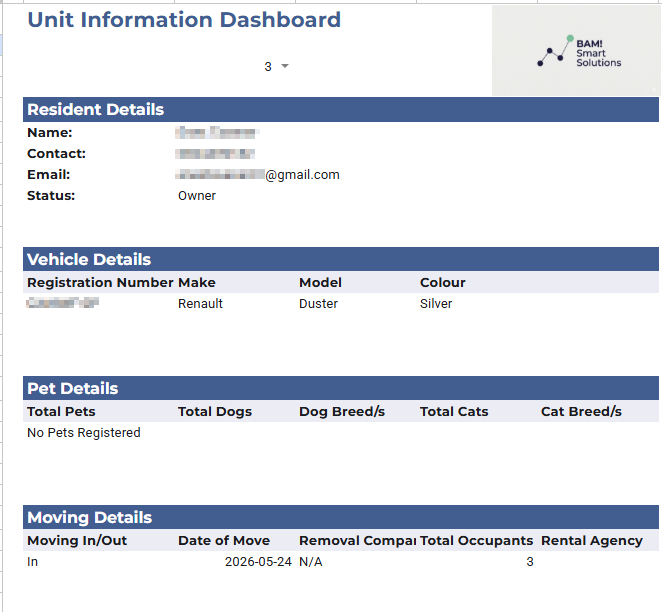
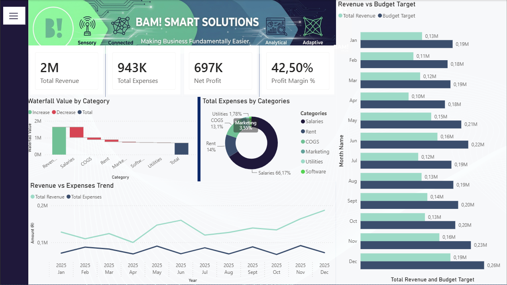

Project Examples
Real builds, showing how manual processes get replaced with structured digital systems.

Residential Estate — Centralised Tracking Dashboard
A residential estate was managing document submissions and resident records entirely manually — scattered emails, paper forms, no single source of truth. We built a centralised Excel-based dashboard to structure the data, track submissions against a primary key system, and eliminate duplicate records.
- Centralised data structure replacing scattered records
- Primary-key based tracking to prevent duplicates
- Filtered views for day-to-day management
- Built entirely in Excel — zero new software cost

Financial Pulse — Real-Time Power BI Dashboard
Built as a capability demonstration, the Financial Pulse dashboard shows how scattered financial data can be pulled into a single, interactive Power BI view — giving directors and managers a real-time read on the numbers that matter, without manually compiling reports.
- Live, interactive Power BI dashboard
- Single-view financial & operational visibility
- Designed for director-level decision-making
- Template approach — adaptable to your data sources
Want something similar built for your business?
Every system starts with a free Friction Audit — we map your worst manual process and show you exactly how to fix it.
Request a Free Friction Audit